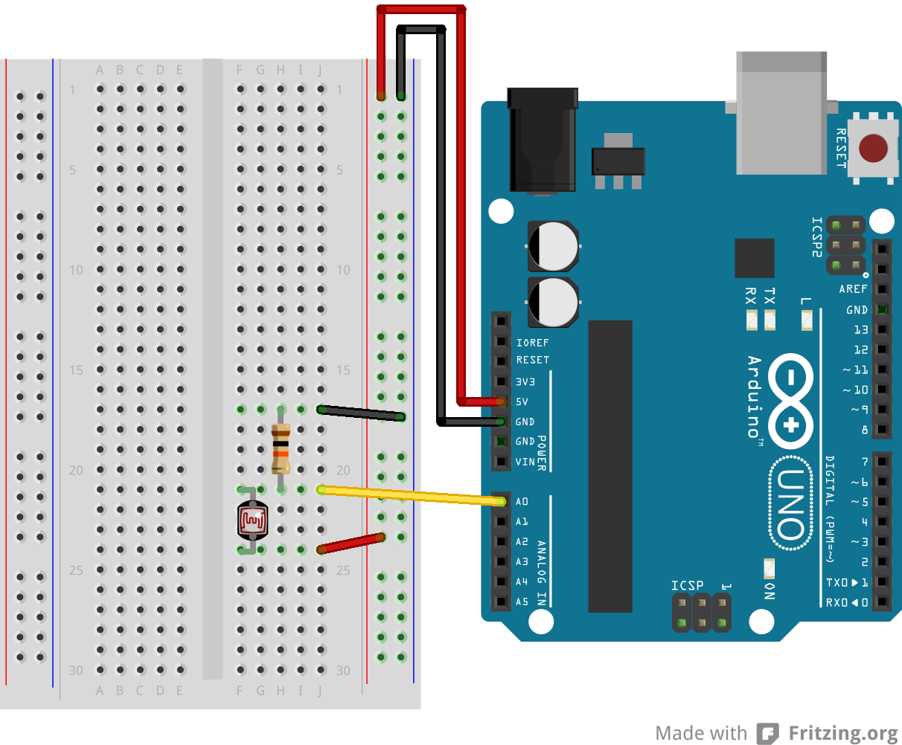

Electricity: Electron flow through a conductive material. Electrons will flow through the path of least resistance.
Circuit: When a power source (let's say a battery) is connected to components that turn electrical energy into some other kind of energy.
Load: The component/s that are doing the work on a circuit.
Ground: The place on a circuit with the lowest potential energy. Sometimes this is the actual ground, but other times it is the grounded part of a circuit. In a circuit, electricity flows from the power source to ground.
Short Circuit: When power and ground connect directly to each other without a load or bypassing a load, the power source overheats.
Voltage: A measure of the potential energy difference between two points on a circuit. Units are Volts (V).
Current: A measure of the magnitude of electron flow at a particular point in a circuit. Units are amperes, or, amps.
Resistance: A measure of materials ability to resist the flow of electrons. Units are ohms.
Do not: connect + and - terminals directly to each other (i.e. Short circut).
Do: connect components that use all your voltage (resistors, LEDs, Motors, etc). The voltage requirements of your components should add up to the amount of voltage provided. If your components draw less voltage, they will overheat. If they draw too much voltage, your components might not work (or be dim, slow, etc. depending).
Circuits must be closed in order for electricity to flow.
Switches control the opening and closing of your circuit.
Conductor: Material that allow for free flow of electrons.
Insulator: Material that prevents the flow of electricity.
Resistor: Materials that resists the flow of electricity.
Transducer: A component that converts one kind of energy into another kind of energy. Sensors convert some kind of energy (mechanical, temperature, light, etc.) into electricity, which can be read as a signal. Actuators convert electrical energy into some other energy (heat, light, movement, etc.)
Switch: A conductor that acts as a mechanical connector/disconnector in a circuit.
Diode: Allow electricity to flow in one direction but not another direction. Diodes are one kind of polarized component, which means they can only be connected in a circuit in one direction.
LED: Light Emitting Diodes emit light, and are polarized like all diodes.
Capacitor: Store electrical energy while it's being provided, and then release it when it stops. Decoupling capacitors are capacitors used to to smooth electricity flow in a circuit. Capacitors can be polarized or unpolarized.
Transistor: An electronic switch. Transistors have three terminals: collector, base (responsible for activating flow between the collector and emitter), and emitter (connects to ground); or source (connects to ground), gate (responsible for activating flow between the source and drain), drain (for MOSFETS). They are often used to have a small amount of energy (an electronic signal) control a larger amount of energy.
Potentiometer: A variable resistor.
Wire: A conductive material wrapped in an insulated material used to connect components. They can generally be thought of as having zero resistance.
Solderless breadboard: An resuable prototyping material that allows you to create easy electrical connections.
Battery holder: Connect to the positive and negative poles of a battery for easy connection to your circuit.

Practical Electronics for Inventors p.i

Practical Electronics for Inventors p.2
Schematic diagrams show the electrical relationship of components in a circuit. They do not (generally) show the spatial relationship of components.
Components have corresponding symbols, which is how they are represented in schematics.

Practical Electronics for Inventors p.10
Below is the same schematic drawn differently:

Basic Circuit:
Series Circuit: In a series circuit, energy flows from one component to the next component. Components draw voltage, and the voltage drops. In a simple DC circuit, the sum of the voltage drops across each component must equal the source voltage (Kirchoff's Voltage Law). The amount of current going into any component is the same as the current coming out (Kirchoff's Current Law).

Parallel Circuit: Components are in parellel when energy flows through them at the same time. Voltage across components wired this way is the same, but the current is divided between them.

Combined Series & Parallel Circuit:
Practical Electronics for Inventors p.49-50
"Ohm's Law" refers to the relationship Georg Simon Ohm observed regarding the behavior of materials: that there is a linear relationship between how much current flows through material when a given voltage is applied across it. It is resistance defined in terms of the ratio of applied voltage and resultant current flow:
R = V/I where R is Resistance (Ohms); V is Voltage (Volts); I is Current (Amps)
One ohm is the resistance through which 1 Amp flows when 1 Volt is applied. For circuit analysis you can predict what voltage must exist across a known resistance and measured current using V=IR and similarly predict amperage across a known resistance and measured voltage using I=V/R.(For a given voltage, more resistance means less current.)

Wikipedia
Consider the circuit we built last week in class:

If we measure the voltage drop of the resistor, and know the resistor value in ohms, we can calculate the current running through it.
I=V/R
I=3.3/220Ω
0.015A or 15mA.
If we know the supply voltage, the required forward voltage of our LED, and the desired current for the LED (from the data sheet), we can calculate the ideal resistor value.
I=VS-VF/R
R = 3.3V/0.020A
R = 165Ω
Electricity as power vs. electronics as signal: With some logic, we can use electricity as a signal. For example, we can read a digital input from an Arduino pin as "HIGH" (5V) and do something based on this information, in contrast to when it is 0V ("LOW").
Arduino pins also allow us to "write" or output binary values of 5V or 0V. Think back to when we used the 5 volt output as a power source for an LED. All of the digital pins can do the same thing--the difference is you can control this with code: you can tell the Arduino to supply 5V or 0V to a particular pin.
The digital pins (on the Arduino Uno these are: 0-13) on an Arduino can input and output digital information via the digitalRead() and digitalWrite() commands, respectively.
Digital inputs are binary, which means they only have two states. Analog inputs can have a range of values.
When we configure Arduino pins as inputs, it is important to use a pulldown (connected to ground) or pullup (connected to V+) resistor. This does a few things: (1) It protects your circuit from a short; (2) It prevents a "floating ground", which is when there is no electrical connection to ground; (3) It creates a path of resistance when the circuit is closed, so the arduino can read the voltage.
Arduino: A microcontroller development board: The microcontroller we are using with an Arduino development board is a Atmel Atmega328P chip. Compared with other computers that can run whole operating systems, microcontroller are firmware-only processors. No processor can run by itself: it needs components like a voltage regulator and external clock to keep time. The Arduino board provides all the components you need in order to easily connect input and outputs. It runs just one program which you can easily change using the Arduino development environment.
In order to see the values you're receiving with Arduino, use the Serial Monitor. In addition to introduce the serial monitor, the link shows how to include Serial.begin in your setup() function and Serial.println() in your loop in order to print digital values.


Pinout diagrams from: Introduction to Arduino
ITP Lab: Microcontrollers: The Basics
Arduino Reference: Digital Pins
Digital Read Serial Arduino reference --note this is also available under File>Examples>01.Basics in your Arduino IDE.
The Arduino's Analog pins (on the Arduino Uno, these are A0-A5) allow us to input or "read" a range of values from 0-1023 via the analogRead() command.
You cannot use the analog pins to output analog signals.
Similarly to a digital input circuit where you are trying to read the value of a switch or button (which requires a pullup or pulldown resistor), most analog sensors require a resistor divider in series with the sensor, where the measurement point is between the resistors. Some sensors already have circuitry (they may even include an integrated circuit) built in that means their wiring is an exception to this. You must check the data sheets for your sensors.
A potentiometer is a variable resistor that works with an internal wiper. It doesn't require an additional resistor because one leg acts as that resistor.
Above is an example wiring for a photocell, a sensor that requires a resistor divider in order to have a value read by the Arduino (from the Arduino reference site).

Above is an example of a proximity sensor with just 3 pinouts: Vcc (Voltage input/the supply voltage), Vo (Voltage output--this is the output you read from your Arduino), and Gnd (Ground).

Above is the block diagram of the proximity sensor datasheet showing pinouts.
Just as with digitalRead(), in order to see the values you are receiving in your Serial Monitor with Arduino, you must use the Serial.begin() command in your setup() function, and Serial.println() to print the value.
ITP: Analog In with an Arduino Lab
Analog Read Serial Arduino reference--note this also avaiable under File>Examples>01.Basics in your Arduino IDE.
Datasheets are technical documentation that include important information about how to operate a component. There are actually datasheets for every component we've looked at and worked with in this class. They will usually at minimum include:
a summary of the component/sensor and its operation;
a pin diagram;
a table of electrical characteristics: supply voltage, the operating current, expected output;
Be careful to stay within the sensors operating voltage and current needs. Remember excess current turns into heat--this could damage your sensor or change the operating characteristics.
Remember that the analog input pins on an Arduino only read analog values. As a digital device, Arduino actually can't output an analog signal, it can only simulate an analog signal on the Digital PWM ~ pins (on an Arduino Uno these are: 3, 5, 6, 9, 10, 11). You can distinguish them with the ~ next to them.
PWM stands for "pulse width modulation", a technique where the digital signal modulates from on (5V) to off (0V) very quickly. Imagine a very short period of time (let's say 2 milliseconds) where 5V is supplied 25% of the time, and 0V is suppled for 75% of the time. The resulting voltage would be 1/4 of 5V, 1.25V. The period of time where the signal is "on" (5V) is the "pulse." The proportion of the time refers to the "width." The total on-off measurement period (100%, in our example, 2 milliseconds) is called the "duty cycle."
Analog Output values written with the analogWrite() function in Arduino can be output on a scale of 0-255, such that 255 requests 100% of the duty cycle. In our example above, requesting 25% of the duty cycle would be analogWrite(64). 50% of the duty cycle would be analogWrite(127), and so on.
You can use the analog output functionality to fade an LED, operate a motor, a fan, etc.
Diagram of square waves showing duty cycles from 0%-100%, from the Arduino PWM Tutorial (linked below).
ITP Video: Analog Output (including PWM on an oscilloscope)